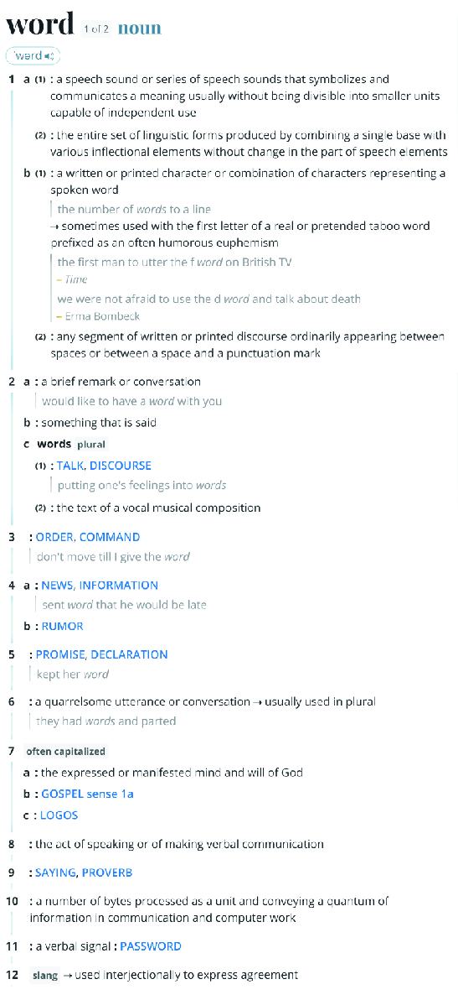

Learning new words can be a difficult task. Everyone undergoes
this process. We need a wide range of words to precisely express
our thoughts. When we talk, we try to explain our subjective
truths as precisely as possible. Nothing is really a real fact.
There is no such thing as objectivity. Even things that seem like
truly objective facts, such as laws for physical entities still have
to be expressed in signs or language for
people to discuss them.
And the human language is built like containers of associations
and meanings.
(we learn
words by)
First
subconsciously, by listening
to conversations.
Then
more and more consciously,
by looking up words in a dictionary.
With this website, one new word is put into focus each week, letting users input their subjective definitions and thereby trying to shed light on the multitude of meanings and associations a single word can entail. Thereby, it can reveal cultural aspects of a society and of different individuals. Allowing machine-translation (MT) of Google Translate, opens up the opportunity to understand the definitions of people not being able to translate themselves to English (e.g., due to lack of fluency). It provides adequate comprehension for most sentences.
However, Google Translate only exists for 139 languages out of around 7000 in the world and provides bias for translations among Western languages being generally the best and those among Asian languages are often poor. Making use of a website in a research project about culture also provides the limitation of internet access. Thereby, voices of regions with no or little internet access are not heard, and their cultures are not considered, reinforcing the predominance of the Western image.
Every word contains a multitude of definitions. Alone the word “word” entails 12 definitions according to the oldest American English and still most famous dictionary Mirriam-Webster.
But who writes these dictionaries?
.
"Translation into different target languages, adds to the game of access and closure." (Tine Melzer)
In 1825 Noah Webster started writing Mirriam-Webster. He learned
26 languages to evaluate the etymology of words. Some of them are
Old English (Anglo-Saxon), German, Greek, Italian, Spanish, French,
Hebrew, Arabic, and Sanskrit. He strongly believed in the American
Revolution and argued that the separation from Britain would be
permanent. The definitions he wrote, were prescriptive, meaning he
altered spellings and accentuated differences in meaning and
pro-
nunciation to shape the American language and make it less “unnec-
essarily” complex.
The oldest British-English dictionary, the Oxford Dictionary of En-
glish (OED) was finished writing by William Chester in 1884. Chester
was a convicted murderer, who was confined to an asylum for the
criminally insane. Meanings in this dictionary are, descriptive, at-
tempting to describe the actual use of words. Later on, James Mur-
ray made a big impact on the dictionar as he established a “reading
program”, which recruits readers who provide the OED editors with
quotations which illustrate how words are used.
Through the worldwide influence of the British Empire and the United States of America, English has become the “lingua franca”, so the way of communication used between people who do not speak one another’s native language and thus is also the most spoken language in the world. This leads to some sort of standardization, which can also be said of providing a limited number of definitions for words in a dictionary. On the one hand, this creates clarity and ease to learn new words. On the other hand, meanings related to different contexts such as culture are therefore very limited. But these meanings can provide us with a lot of knowledge about the way people think, their subjective reality, and their culture.
In defining words, there are two categories that shed light onto different aspects of life. Words for objects are usually defined as to how they function and how they are used, or look in a culture. Whereas, concept words, shed light on how a society is structured.
By examining the definitions of words, how might we come to understand one another's subjective realities?
What is our relationship to words? What is the meaning of a word?
Words can be seen as a group of elements, that is comparable to other words. In practice this means, that it carries the vast image world of memory. Generally, the meaning of a word is understood as how it is used. It comes with associations, with how and where the word is familiarly used (Wittgenstein). Especially the times it is used brilliantly or memerobly to us (Pound). Therefore, it is specific to its context and speaker and shows itself in a certain context (Stokhof). Some words are only context-related. Deixis, are for example “I” and “you” or “here” and “now”. Patterns of meanings can display matched habits, that we see as something so natural to us. Ultimately this means, that words and meanings change over time. Specific to objects, the meaning of a word often depends on its function, its nature and purpose in the specific context of action. But this is also the other way around. How we talk about objects, is how we deal with them. How we perceive words for abstract terms such as time and space are very dependent on language. Utimately we can say that all forms of representation fail to fully substitute a thing (Stokhof).
How do we name things? (Neologism)
At this moment, there are around one million words. The educated English speaker only has a vocabulary of about 75.000
words. But more and more words keep being created. Language is constantly changing. Did you ever consider that things
that have no name for them, are not really considered relevant. Also, as soon as we start naming things, we take a
certain ownership in them.
There are 13 mechanisms that determine how words are created.
Derivation: Adding a prefix or suffix to an existing word. Example: Realisation - , Democratise -
Back formation: Removal of a phantom affix. Example: Sleaze - Sleazy, Enthuse -
Compounding: Juxtaposition of two existing words. Often they are first linked with a hyphen and then become a single
unit.
Example: bailout, into, nobody, daydream
Repurposing: Taking a word from one context and applying it to another. Example: Crane, (computer) mouse
Conversion: Taking a word from one word class and transplanting it to another. Example: giant(adjective) - Giant (noun),
friend (noun) - friend (verb)
Eponyms: Words named after a person or place. Example: Atlas, Diesel, Sandwich, Gun
Abbreviations: Shortening words. Example: Taxi - Taximeter Cabriolet, Goodbye - God be with you, Wig - periwig
Loanwords: Borrowings from other languages. Example: Tattoo (Tahitian), Shark (Mayan), Slogan (Gaelic)
Onomatopeia: The creation of a word by imitation of the sound it is supposed to make. Example: Bump, Plop, Cuckoo, Barf
Reduplication: (Near-)repetition of a word or sound. Example: flip-flop, picnic, hanky-panky
Nonce words: Completely new words without little relation to any existing form. Example: quark (Murray Gell-Mann), bling
(unknown), fleek (Vine celebrity Kayla Newman)
Error: Throught misspellings, mishearings, mispronunciations and mistranscriptions. Example Scramble - Scrabble, Shit -
Science
Portmanteaus/ Blending: Removing part of the word and then sometimes also adding one. Example: Sitcom, Internet, Sexting
(Combination): Combination of the other methods. Example: Yupplie - young and upwardly mobile (initialism, derivation),
Cop - copper - to cop (abbreviation of derivation)
What unites the methods, is that they’re a result of association. Relativists believe that our cultural backgrounds
determine terminology, therefore creating explicit differences and variations. Universalists believe that because we are
all biologically similar, the way we perceive and name our impressions are close to identical. New words slowly become
integrated by constant use. This happens when the new words are understandable to the average speaker, so the source of
the words are recognisable. Also when the words have some prior relation or come from a similar domain (Constantine
Lignos, Hilary Prichard, 2015). When the words meanings are not too specific. If the word feels right for its language,
meaning if the cadences and sound sequences are typical for this language. Also if the words are humorous or connected
with pop culture.
How is language influencing us?
Language is a social intrument for sharing, therefore it is the underlying tool for human society (Whorf-Sapir). It is mediating between acting individuals. But because it holds the shared memory of customs and practices, it can also be an obstacle for individuals gaining access to the world.
“The limits of my language mean the limits of my world.” (Ludwig Wittgenstein)
By studying linguistic phenomena, we gain access to the social reality of people and their structure of thinking. As humans use their cognitive and sensory powers, which are subjective to approach the world, we view the world not in an objective manner. This can create challenges for the fields of science or philosophy, where words have to be more permanent. According to the linguistic relativity theory, it is a person’s language that determines or influences the way the person thinks. The structures of thinking are dependent on language. The structure of language therefore influences how we understand our environment, by habitually making use of it.
How new words are born (Andy Bodle, The Guardian)
Frankenwords: they're alive! But for how long? (Andy Bodle, The Guardian)
Through the language glass (Guy Deutscher)
Taxidermy for language - Animals (Tine Melzer)
Dictionary Editors (Oxford English Dictionary)
.